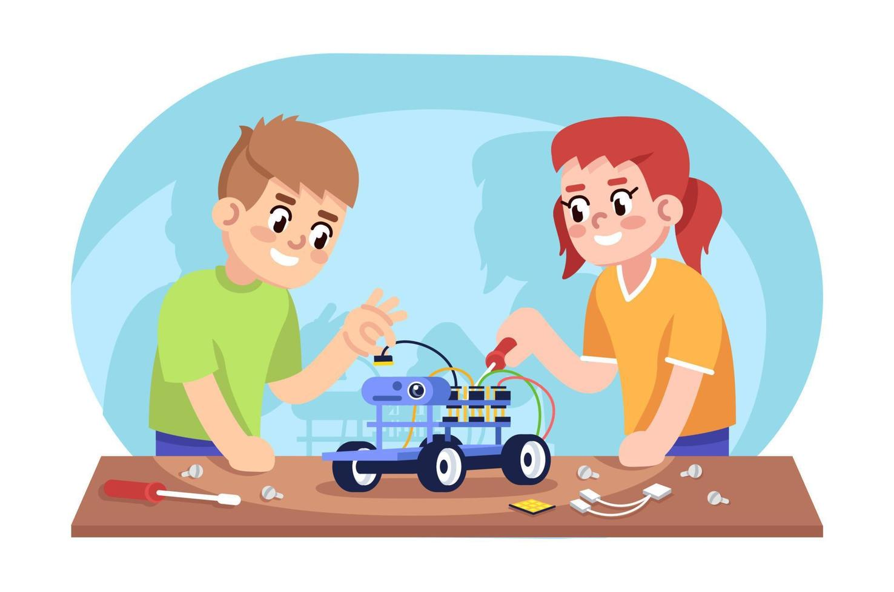
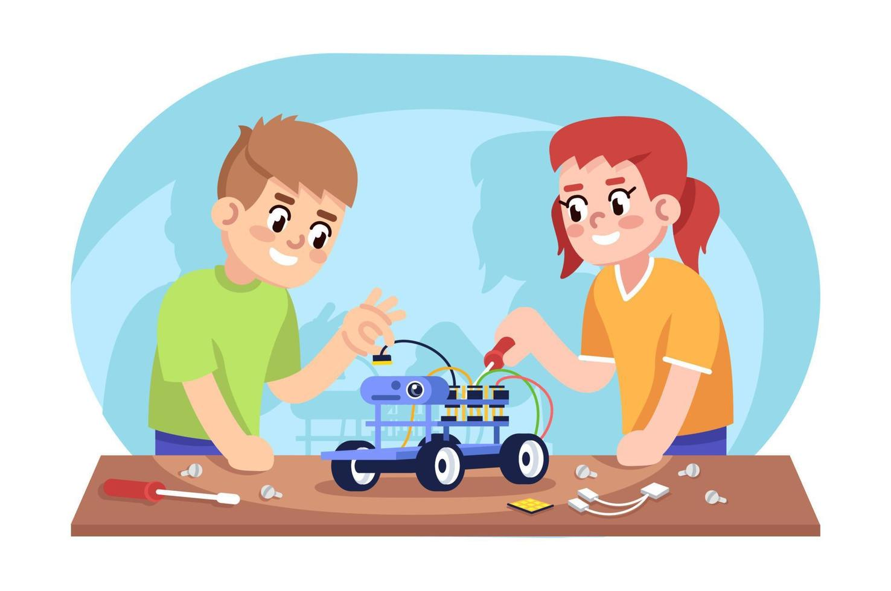
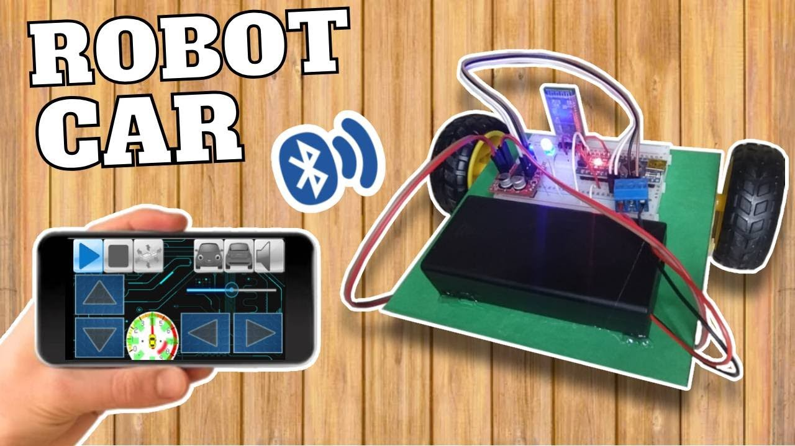
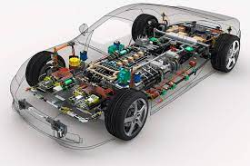
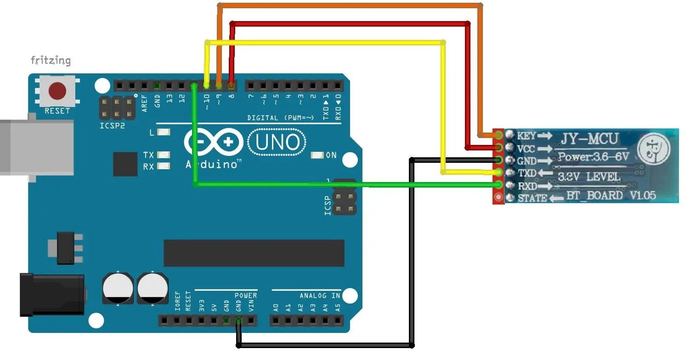
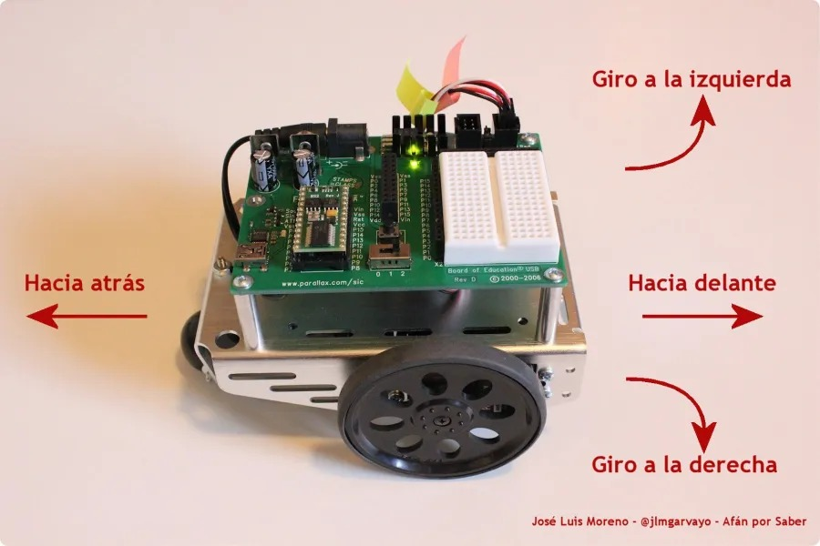
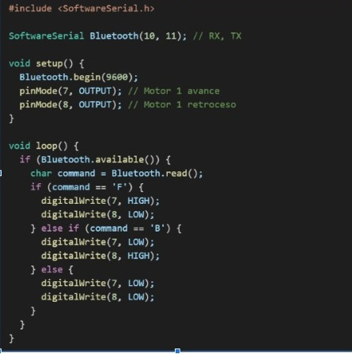
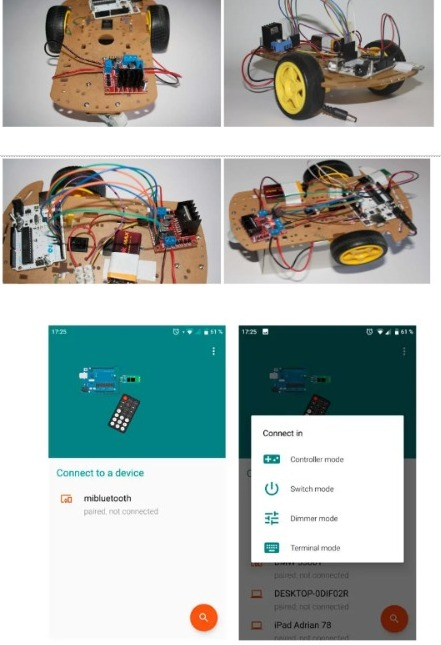
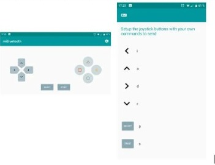

Semana 4
Dia 4


Introducción
En el último día del curso, se propone un reto práctico para aplicar y consolidar los conocimientos adquiridos. El objetivo es construir y programar un carro robótico controlado por Bluetooth, utilizando un microcontrolador Arduino y un módulo Bluetooth (HC-05 o HC-06). Este proyecto integrará áreas como electrónica, programación y diseño mecánico.
Además de reforzar habilidades técnicas, este reto fomenta la resolución de problemas, el pensamiento computacional y la creatividad. También ofrece a los docentes una guía para replicar esta actividad en el aula, promoviendo un aprendizaje significativo basado en la práctica.

Integra componentes como motores, controladores y módulos de comunicación.
Refuerza habilidades de pensamiento lógico y técnicas de programación.

Proporciona comunicación inalámbrica entre el Arduino y un dispositivo móvil.
Facilita el control remoto a través de comandos enviados desde una aplicación.


Crea un programa en Arduino que interprete comandos enviados desde una aplicación Bluetooth. Por ejemplo:
Comandos:
F: Avanzar.
B: Retroceder.
L: Girar a la izquierda.
R: Girar a la derecha.
S: Detenerse.
Ejemplo de código:

Prueba el código enviando comandos desde una aplicación Bluetooth (por ejemplo, "Serial Bluetooth Terminal").


Objetivo: Construir un carro robótico funcional controlado por Bluetooth y programar su desplazamiento siguiendo secuencias lógicas que integren comandos avanzados.
Instrucciones:
Obra publicada con Licencia Creative Commons Reconocimiento Compartir igual 4.0